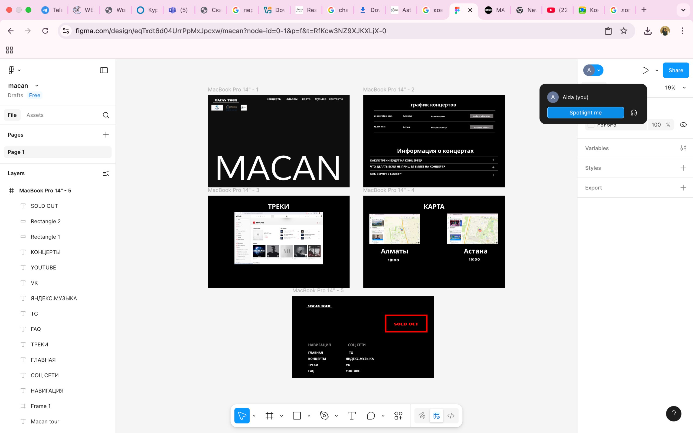

Midterm Project Topic
Portfolio website for a student to present projects and skills.
Target users: teachers, classmates, potential employers.
Purpose: demonstrate knowledge and share contact information.
Wireframes
Midterm Project — “Macan: Artist Website” This wireframe was created in Figma to outline the structure and look of my midterm project. The concept uses a dark hero section, bold typography, and a simple top navigation to match the visual style of Macan’s official tour branding. The board shows six core screens—Home, About, Discography, Videos, Tour, and Contact—designed to guide fans to music, shows, and media with minimal clicks.